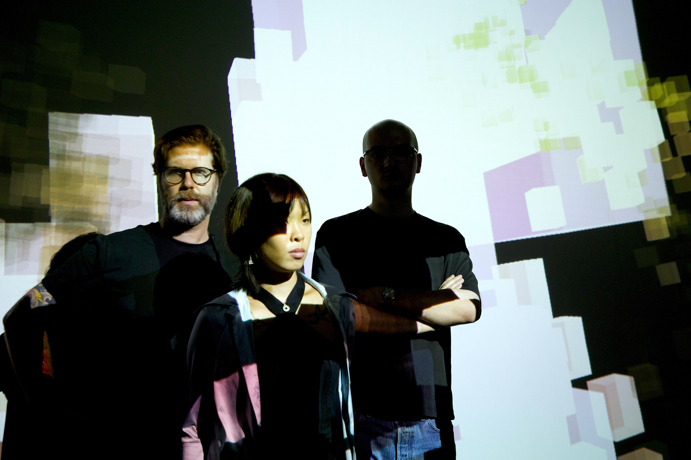

Vivian Li
Extrait de projet
Vidéo YouTube à ajouter

Projet en développement
LANDSLIDE a joué dans le cadre du festival AI-Scape, coproduit par ELEKTRA et WeSA
Documentation stéréo et projection frontale de la performance du 4 septembre à Thila Grounds, Séoul (Korea)
Un concert audiovisuel immersif et ludique du collectif LANDSLIDE, où musique électronique, formes géométriques et textures numériques se transforment en une véritable gastronomie sonore et visuelle. Conçue pour les dômes, cette performance accessible à tous les âges propose une exploration sensorielle et joyeuse de l’abstraction numérique.
Vidéo YouTube à ajouter